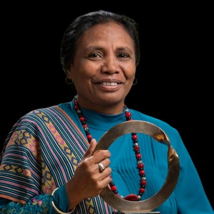

Mengenal para pejuang bumi yang menginspirasi dunia
Teks biografi adalah jenis teks naratif objektif yang berisi kisah atau riwayat hidup seseorang yang ditulis oleh orang lain (bukan diri sendiri). Teks ini dibuat berdasarkan fakta dan pengalaman nyata dengan tujuan untuk memberikan informasi, inspirasi, serta keteladanan kepada pembaca.

"Hutan, tanah, air, dan batu adalah bagian yang sangat penting bagi kehidupan masyarakat kami."
Aleta Baun adalah seorang aktivis lingkungan hidup yang berasal dari Pulau Timor, Nusa Tenggara Timur. Ia dikenal karena perjuangannya dalam menjaga hutan dan sumber daya alam yang menjadi sumber kehidupan masyarakat adat di daerahnya. Aleta Baun lahir pada tahun 1966 di Mollo, Timor Tengah Selatan. Sejak kecil, ia sudah diajarkan untuk mencintai alam dan menjaga kelestarian lingkungan. Menurutnya, hutan, tanah, air, dan batu merupakan bagian yang sangat penting bagi kehidupan masyarakat setempat.
Pada awal tahun 2000-an, Aleta Baun memimpin masyarakat untuk menolak kegiatan penambangan marmer yang dianggap dapat merusak lingkungan dan mengancam kehidupan warga. Bersama para perempuan adat, ia melakukan aksi damai dengan menenun di lokasi tambang sebagai bentuk protes terhadap kerusakan alam. Aksi tersebut berlangsung selama berbulan-bulan, dengan para perempuan yang tetap menenun di sekitar area tambang sebagai simbol bahwa mereka ingin mempertahankan tanah dan hutan yang menjadi sumber kehidupan masyarakat Mollo. Meskipun menghadapi berbagai tantangan, mereka tetap berjuang dengan cara yang damai dan tidak menggunakan kekerasan. Selain mengajak masyarakat menolak penambangan, Aleta Baun juga aktif memberikan pemahaman tentang pentingnya menjaga lingkungan kepada generasi muda. Ia sering terlibat dalam kegiatan pelestarian alam, seperti menanam pohon dan menjaga sumber mata air agar tetap bersih dan terawat.
Perjuangan yang dilakukan Aleta Baun akhirnya membuahkan hasil. Beberapa kegiatan penambangan berhasil dihentikan sehingga kawasan hutan dan pegunungan di wilayah Mollo tetap terjaga. Atas dedikasinya dalam melindungi lingkungan, ia menerima berbagai penghargaan, salah satunya penghargaan internasional berupa Goldman Environmental Prize pada tahun 2013. Sampai sekarang, Aleta Baun masih menjadi inspirasi bagi banyak orang untuk menjaga lingkungan dan menghargai kearifan lokal. Kisah hidupnya membuktikan bahwa perubahan dapat dimulai dari kepedulian terhadap lingkungan sekitar. Dengan keberanian, kerja sama, dan rasa cinta terhadap alam, ia berhasil menggerakkan masyarakat untuk melindungi tanah kelahiran mereka dari kerusakan.